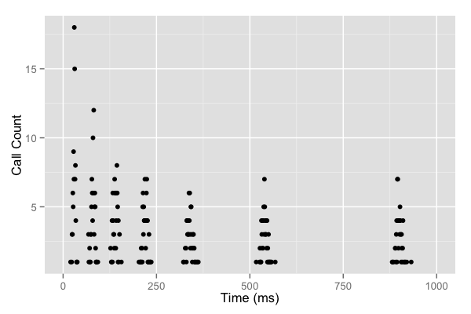
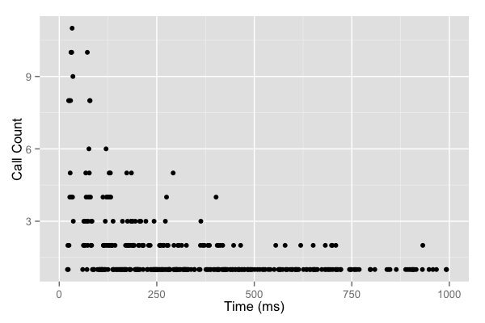

최근 본 면접에서 새로 알게 된 Exponential Back-Off 라는 개념과 Jitter를 사용한 개선 방법을 공부하고 정리한다. 그리고, Flutter 앱을 개발할 때 이 전략을 활용하기 위해 Dart code로 구현해 본다.
Retry Strategy
- 어떤 system에서 다른 system을 call하는 상황에서 failure는 언제든지 발생할 수 있다.
- 앱을 개발할 때는 server 부하 또는 일시적인 network 오류 등에 의해 http 요청이 오랜 시간 동안 완료되지 않거나 실패하는 상황을 떠올릴 수 있다.
- 이러한 일시적인 문제 때문에 client에서 server로 보내는 data가 유실될 수 있는데, 이것을 막기 위해 여러 가지 방법으로 retry 전략을 세운다.
- Request timeout을 설정하여 일정 시간 동안 응답이 없으면 작업을 취소하고 동일한 request를 retry하는 것이 대표적인 예시이다.
Exponential Back-Off
- 요청을 재시도할 때 가능한 또 다른 문제 중 하나는 연결이 정상화 되었을 때 server가 N개의 client로부터 동시다발적으로 요청을 수신하는 경우이다.
- Server가 한 번에 처리할 수 있는 양보다 훨씬 많은 수의 요청이 들어오면 server 과부하에 의해 data 유실 등의 문제가 여전히 발생할 수 있다.
- 이 문제를 해결하기 위해 요청을 분산시키는 방법으로 Exponential Back-Off(지수 백오프) 라는 방법을 사용한다.
- 말 그대로 backoff를 지수적으로 늘려가는 방법인데, retry 사이 시간 간격을 지수적으로 증가시키면서 더 많이 재시도 할 수록 더 나중에 요청을 보내도록 만든다.
- 이렇게 하면 server에 한 번에 들어오는 요청 수를 점진적으로 줄여나갈 수 있다.

Exponential Back-Off with Jitter
- 하지만 이 방법도 문제가 있는데, 여전히 특정 시점에 server로 요청이 몰리게 된다. Retry 간격이 상수이기 때문에 근본적인 원인을 해결하긴 어렵다.
- 특정 시점에 몰리는 call 횟수를 가능 한 고르게 분산시켜야 하는데, 그 방법 중 하나가 Jitter를 추가하는 것이다.
- Jitter란 ‘지연 변이’라는 뜻으로, 지수 백오프에 randomness를 추가하여 0에서 지수 back-off 값 사이에 랜덤한 값을 delay로 사용한다.
- 이렇게 하면 지수 back-off만 적용했을 때 보다 요청이 고르게 분포될 수 있다.

Implementation in Dart
Implementation of Exponential Back-Off
-
Exponential back-off는 Dart code로 구현해 보자. 아래는 exponential back-off delay를 계산하는 함수이다. Retry 횟수에 따라 delay가 2^n씩 증가한다.
int sleep({ required int base, // delay 초깃값 required int attempts, // retry 시도 횟수 }) { final exp = min(attempts, 31); // prevent overflow final sleep = base * pow(2, exp); return sleep.toInt(); } -
이 값을 request에 실패했을 때 다음 retry까지의 delay 시간으로 사용한다. 아래는 위 함수가 반환하는 값 만큼 delay를 주며 지정한 횟수 만큼 retry를 하는 함수이다.
Future<T> request<T>({ required int maxAttempts, required int baseDelay, required FutureOr<T> Function() taskBuilder, FutureOr<void> Function(int retryCount)? willRetry, }) async { var attempts = 0; while (true) { attempts += 1; try { return await taskBuilder(); } on Exception { // 최대 시도 횟수를 초과하면 retry 종료 if (attempts >= maxAttempts) { rethrow; } await willRetry?.call(); final delay = min( _maxTimeout, sleep(attempts: attempts, base: baseDelay), ); final duration = Duration(milliseconds: delay); await Future.delayed(duration); } } }
Implementation of Exponential Back-Off with Jitter
-
아래는 exponential back-off를 구할 때 randomness를 추가하는 Dart code 이다.
int sleep({ required int base, required int attempts, }) { final exp = min(attempts, 31); final sleep = base * pow(2, exp); return _random.nextInt(sleep.toInt()); // 0부터 sleep 사이의 random 값 }
Packages
- Dart에서 exponential back-off를 통한 retry를 구현하는 package는 두 가지 정도 찾아볼 수 있었다. Randomization 구현 방식이 각각 다르기 때문에 상황에 맞게 선택해서 사용해도 좋을 것 같다.
- retry : Google에서 관리하는 package로,
randomizationFactor값을 설정하여 exponential back-off 값을 중심으로 -n% ~ +n% 사이의 값을 사용하도록 유연하게 설정할 수 있다는 장점이 있다. - exponential_back_off : 개인 개발자가 관리하는 package로,
maxRandomizationFactor값을 설정하여 exponential back-off 값을 중심으로 0% ~ n% 사이의 값을 사용하도록 설정할 수 있다.
Conclusion
- 실패가 없는 system을 만들 수는 없다. 실패했을 때 빠르게 잘 회복할 수 있는 system을 만드는 것이 중요하다.
- 지금까지 개발했던 앱에서는 retry 전략을 고려할 만큼 문제가 됐던 적이 없었지만, 사용자가 많아지고 server에 보내는 event들이 많아지면 이런 전략이 꼭 필요할 것 같다. 클라우드 서비스를 사용하는 경우 client에서 무분별하게 보내는 과도한 요청은 서비스의 안정성을 떨어뜨리고 비용 문제까지 갈 수도 있기 때문이다.
- Exponential backoff는 retry 전략을 위한 방법들 중 하나이지, 가장 좋은 방법이 아니다. Exponential backoff는 jitter를 추가하더라도 latency가 증가하는 등의 문제가 여전히 발생할 수 있다. 상황에 맞는 적절한 retry 전략을 구현해서 사용할 수 있어야 하겠다.